Chapter 5: Structure and Function of Plasma Membranes¶
Introduction¶
The plasma membrane, the cell membrane, has many functions, but the most basic one is to define the cell's borders and keep the cell functional. The plasma membrane is selectively permeable. This means that the membrane allows some materials to freely enter or leave the cell, while other materials cannot move freely, but require a specialized structure, and occasionally, even energy investment for crossing.
5.1 Components and Structure¶
Learning Objectives
By the end of this section, you will be able to do the following:
- Understand the cell membrane fluid mosaic model
- Describe phospholipid, protein, and carbohydrate functions in membranes
- Discuss membrane fluidity
A cell’s plasma membrane defines the cell, outlines its borders, and determines the nature of its interaction with its environment (see Table 5.1 for a summary). Cells exclude some substances, take in others, and excrete still others, all in controlled quantities. The plasma membrane must be very flexible to allow certain cells, such as red and white blood cells, to change shape as they pass through narrow capillaries. These are the more obvious plasma membrane functions. In addition, the plasma membrane's surface carries markers that allow cells to recognize one another, which is vital for tissue and organ formation during early development, and which later plays a role in the immune response's “self” versus “non-self” distinction.
Among the most sophisticated plasma membrane functions is the ability for complex, integral proteins, receptors to transmit signals. These proteins act both as extracellular input receivers and as intracellular processing activators. These membrane receptors provide extracellular attachment sites for effectors like hormones and growth factors, and they activate intracellular response cascades when their effectors are bound. Occasionally, viruses hijack receptors (HIV, human immunodeficiency virus, is one example) that use them to gain entry into cells, and at times, the genes encoding receptors become mutated, causing the signal transduction process to malfunction with disastrous consequences.
Fluid Mosaic Model¶
Scientists identified the plasma membrane in the 1890s, and its chemical components in 1915. The principal components they identified were lipids and proteins. In 1935, Hugh Davson and James Danielli proposed the plasma membrane's structure. This was the first model that others in the scientific community widely accepted. It was based on the plasma membrane's “railroad track” appearance in early electron micrographs. Davson and Danielli theorized that the plasma membrane's structure resembles a sandwich. They made the analogy of proteins to bread, and lipids to the filling. In the 1950s, advances in microscopy, notably transmission electron microscopy (TEM), allowed researchers to see that the plasma membrane's core consisted of a double, rather than a single, layer. In 1972, S.J. Singer and Garth L. Nicolson proposed a new model that provides microscopic observations and better explains plasma membrane function.
The explanation, the fluid mosaic model, has evolved somewhat over time, but it still best accounts for plasma membrane structure and function as we now understand them. The fluid mosaic model describes the plasma membrane structure as a mosaic of components—including phospholipids, cholesterol, proteins, and carbohydrates—that gives the membrane a fluid character. Plasma membranes range from 5 to 10 nm in thickness. For comparison, human red blood cells, visible via light microscopy, are approximately 8 µm wide, or approximately 1,000 times wider than a plasma membrane. The membrane does look a bit like a sandwich (Figure 5.2).
![This illustration shows a phospholipid bilayer with proteins and cholesterol embedded in it. Integral membrane proteins span the entire membrane. Protein channels are integral membrane proteins with a central pore through which molecules can pass. Peripheral proteins are associated with the phospholipid head groups on one side of the membrane only. A glycoprotein is shown with the protein portion of the molecule embedded in the membrane and the carbohydrate portion jutting out from the membrane. A glycolipid is also shown with the lipid portion embedded in the membrane and the carbohydrate portion jutting out of the membrane.](img/figure-05-01-01-52bf.webp)
A plasma membrane's principal components are lipids (phospholipids and cholesterol), proteins, and carbohydrates attached to some of the lipids and proteins. A phospholipid is a molecule consisting of glycerol, two fatty acids, and a phosphate-linked head group. Cholesterol, another lipid comprised of four fused carbon rings, is situated alongside the phospholipids in the membrane's core. The protein, lipid, and carbohydrate proportions in the plasma membrane vary with cell type, but for a typical human cell, protein accounts for about 50 percent of the composition by mass, lipids (of all types) account for about 40 percent, and carbohydrates comprise the remaining 10 percent. However, protein and lipid concentration varies with different cell membranes. For example, myelin, an outgrowth of specialized cells' membrane that insulates the peripheral nerves' axons, contains only 18 percent protein and 76 percent lipid. The mitochondrial inner membrane contains 76 percent protein and only 24 percent lipid. The plasma membrane of human red blood cells is 30 percent lipid. Carbohydrates are present only on the plasma membrane's exterior surface and are attached to proteins, forming glycoproteins, or attached to lipids, forming glycolipids.
Phospholipids¶
The membrane's main fabric comprises amphiphilic, phospholipid molecules. The hydrophilic or “water-loving” areas of these molecules (which look like a collection of balls in an artist’s rendition of the model) (Figure 5.2) are in contact with the aqueous fluid both inside and outside the cell. Hydrophobic, or water-hating molecules, tend to be non-polar. They interact with other non-polar molecules in chemical reactions, but generally do not interact with polar molecules. When placed in water, hydrophobic molecules tend to form a ball or cluster. The phospholipids' hydrophilic regions form hydrogen bonds with water and other polar molecules on both the cell's exterior and interior. Thus, the membrane surfaces that face the cell's interior and exterior are hydrophilic. In contrast, the cell membrane's interior is hydrophobic and will not interact with water. Therefore, phospholipids form an excellent two-layer cell membrane that separates fluid within the cell from the fluid outside the cell.
A phospholipid molecule (Figure 5.3) consists of a three-carbon glycerol backbone with two fatty acid molecules attached to carbons 1 and 2, and a phosphate-containing group attached to the third carbon. This arrangement gives the overall molecule a head area (the phosphate-containing group), which has a polar character or negative charge, and a tail area (the fatty acids), which has no charge. The head can form hydrogen bonds, but the tail cannot. Scientists call a molecule with a positively or negatively charged area and an uncharged, or non-polar, area amphiphilic or “dual-loving.”
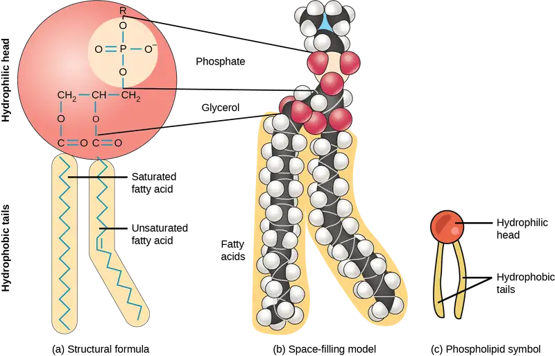
This characteristic is vital to the plasma membrane's structure because, in water, phospholipids arrange themselves with their hydrophobic tails facing each other and their hydrophilic heads facing out. In this way, they form a lipid bilayer—a double layered phospholipid barrier that separates the water and other materials on one side from the water and other materials on the other side. Phospholipids heated in an aqueous solution usually spontaneously form small spheres or droplets (micelles or liposomes), with their hydrophilic heads forming the exterior and their hydrophobic tails on the inside (Figure 5.4).
![The image on the left shows a spherical lipid bilayer, shown as a half sphere whose surface is covered in the spherical polar heads, and thin, strandlike tails extend inward. In the core of the sphere is another half sphere, with the same anatomy but with the polar heads facing inward and the strandlike tails facing out toward the tails of the outer layer. The image on the right shows a smaller sphere that has a single lipid layer only, with the spherical heads facing outward. The image at the bottom shows a lipid bilayer sheet; whose polar heads form the upper and lower surfaces, with tails extending toward each other in the middle.](img/figure-05-01-03-f9be.webp)
Proteins¶
Proteins comprise the plasma membranes' second major component. Integral proteins, or integrins, as their name suggests, integrate completely into the membrane structure, and their hydrophobic membrane-spanning regions interact with the phospholipid bilayer's hydrophobic region (Figure 5.2). Single-pass integral membrane proteins usually have a hydrophobic transmembrane segment that consists of 20–25 amino acids. Some span only part of the membrane—associating with a single layer—while others stretch from one side to the other, and are exposed on either side. Up to 12 single protein segments comprise some complex proteins, which are extensively folded and embedded in the membrane (Figure 5.5). This protein type has a hydrophilic region or regions, and one or several mildly hydrophobic regions. This arrangement of protein regions orients the protein alongside the phospholipids, with the protein's hydrophobic region adjacent to the phospholipids' tails and the protein's hydrophilic region or regions protruding from the membrane and in contact with the cytosol or extracellular fluid.
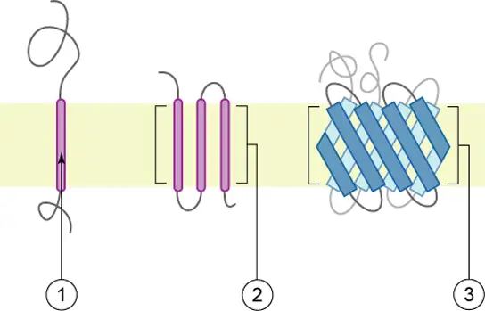
Peripheral proteins are on the membranes' exterior and interior surfaces, attached either to integral proteins or to phospholipids. Peripheral proteins, along with integral proteins, may serve as enzymes, as structural attachments for the cytoskeleton's fibers, or as part of the cell’s recognition sites. Scientists sometimes refer to these as “cell-specific” proteins. The body recognizes its own proteins and attacks foreign proteins associated with invasive pathogens.
Carbohydrates¶
Carbohydrates are the third major plasma membrane component. They are always on the cells' exterior surface and are bound either to proteins (forming glycoproteins) or to lipids (forming glycolipids) (Figure 5.2). These carbohydrate chains may consist of 2–60 monosaccharide units and can be either straight or branched. Along with peripheral proteins, carbohydrates form specialized sites on the cell surface that allow cells to recognize each other. These sites have unique patterns that allow for cell recognition, much the way that the facial features unique to each person allow individuals to recognize him or her. This recognition function is very important to cells, as it allows the immune system to differentiate between body cells (“self”) and foreign cells or tissues (“non-self”). Similar glycoprotein and glycolipid types are on the surfaces of viruses and may change frequently, preventing immune cells from recognizing and attacking them.
We collectively refer to these carbohydrates on the cell's exterior surface—the carbohydrate components of both glycoproteins and glycolipids—as the glycocalyx (meaning “sugar coating”). The glycocalyx is highly hydrophilic and attracts large amounts of water to the cell's surface. This aids in the cell's interaction with its watery environment and in the cell’s ability to obtain substances dissolved in the water. As we discussed above, the glycocalyx is also important for cell identification, self/non-self determination, and embryonic development, and is used in cell to cell attachments to form tissues.
Evolution Connection: How Viruses Infect Specific Organs
Glycoprotein and glycolipid patterns on the cells' surfaces give many viruses an opportunity for infection. HIV and hepatitis viruses infect only specific organs or cells in the human body. HIV is able to penetrate the plasma membranes of a subtype of lymphocytes called T-helper cells, as well as some monocytes and central nervous system cells. The hepatitis virus attacks liver cells.
These viruses are able to invade these cells, because the cells have binding sites on their surfaces that are specific to and compatible with certain viruses (Figure 5.6). Other recognition sites on the virus’s surface interact with the human immune system, prompting the body to produce antibodies. Antibodies are made in response to the antigens or proteins associated with invasive pathogens, or in response to foreign cells, such as might occur with an organ transplant. These same sites serve as places for antibodies to attach and either destroy or inhibit the virus' activity. Unfortunately, these recognition sites on HIV change at a rapid rate because of mutations, making an effective vaccine against the virus very difficult, as the virus evolves and adapts. A person infected with HIV will quickly develop different populations, or variants, of the virus that differences in these recognition sites distinguish. This rapid change of surface markers decreases the effectiveness of the person’s immune system in attacking the virus, because the antibodies will not recognize the surface patterns' new variations. In the case of HIV, the problem is compounded because the virus specifically infects and destroys cells involved in the immune response, further incapacitating the host.
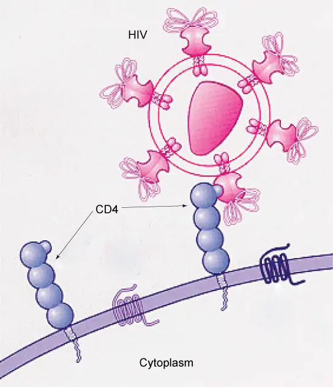
Membrane Fluidity¶
The membrane's mosaic characteristic helps to illustrate its nature. The integral proteins and lipids exist in the membrane as separate but loosely attached molecules. These resemble the separate, multicolored tiles of a mosaic picture, and they float, moving somewhat with respect to one another. The membrane is not like a balloon, however, that can expand and contract; rather, it is fairly rigid and can burst if penetrated or if a cell takes in too much water. However, because of its mosaic nature, a very fine needle can easily penetrate a plasma membrane without causing it to burst, and the membrane will flow and self-seal when one extracts the needle.
The membrane's mosaic characteristics explain some but not all of its fluidity. There are two other factors that help maintain this fluid characteristic. One factor is the nature of the phospholipids themselves. In their saturated form, the fatty acids in phospholipid tails are saturated with bound hydrogen atoms. There are no double bonds between adjacent carbon atoms. This results in tails that are relatively straight. In contrast, unsaturated fatty acids do not contain a maximal number of hydrogen atoms, but they do contain some double bonds between adjacent carbon atoms. A double bond results in a bend in the carbon string of approximately 30 degrees (Figure 5.3).
Thus, if decreasing temperatures compress saturated fatty acids with their straight tails, they press in on each other, making a dense and fairly rigid membrane. If unsaturated fatty acids are compressed, the “kinks” in their tails elbow adjacent phospholipid molecules away, maintaining some space between the phospholipid molecules. This “elbow room” helps to maintain fluidity in the membrane at temperatures at which membranes with saturated fatty acid tails in their phospholipids would “freeze” or solidify. The membrane's relative fluidity is particularly important in a cold environment. A cold environment usually compresses membranes comprised largely of saturated fatty acids, making them less fluid and more susceptible to rupturing. Many organisms (fish are one example) are capable of adapting to cold environments by changing the proportion of unsaturated fatty acids in their membranes in response to lower temperature.
Interactive
Visit this site to see animations of the membranes' fluidity and mosaic quality.
Animals have an additional membrane constituent that assists in maintaining fluidity. Cholesterol, which lies alongside the phospholipids in the membrane, tends to dampen temperature effects on the membrane. Thus, this lipid functions as a buffer, preventing lower temperatures from inhibiting fluidity and preventing increased temperatures from increasing fluidity too much. Thus, cholesterol extends, in both directions, the temperature range in which the membrane is appropriately fluid and consequently functional. Cholesterol also serves other functions, such as organizing clusters of transmembrane proteins into lipid rafts.
Table 5.1
| Plasma Membrane Components and Functions | |
|---|---|
| Component | Location |
| Phospholipid | Main membrane fabric |
| Cholesterol | Attached between phospholipids and between the two phospholipid layers |
| Integral proteins (for example, integrins) | Embedded within the phospholipid layer(s); may or may not penetrate through both layers |
| Peripheral proteins | On the phospholipid bilayer's inner or outer surface; not embedded within the phospholipids |
| Carbohydrates (components of glycoproteins and glycolipids) | Generally attached to proteins on the outside membrane layer |
Career Connection: Immunologist
The variations in peripheral proteins and carbohydrates that affect a cell’s recognition sites are of prime interest in immunology. In developing vaccines, researchers have been able to conquer many infectious diseases, such as smallpox, polio, diphtheria, and tetanus.
Immunologists are the physicians and scientists who research and develop vaccines, as well as treat and study allergies or other immune problems. Some immunologists study and treat autoimmune problems (diseases in which a person’s immune system attacks their own cells or tissues, such as lupus) and immunodeficiencies, whether acquired (such as acquired immunodeficiency syndrome, or AIDS) or hereditary (such as severe combined immunodeficiency, or SCID). Immunologists also help treat organ transplantation patients, who must have their immune systems suppressed so that their bodies will not reject a transplanted organ. Some immunologists work to understand natural immunity and the effects of a person’s environment on it. Others work on questions about how the immune system affects diseases such as cancer. In the past, researchers did not understand the importance of having a healthy immune system in preventing cancer.
Immunologists who focus on certain types of diseases or pathogens can play an important role in saving lives during specific outbreaks and pandemics. Kizzmekia S. Corbett, for example, was a research fellow and scientific lead working specifically on coronaviruses. When the COVID-19 pandemic occurred, Corbett's deep experience and knowledge was instrumental in developing one of the main vaccines (Moderna). She is now applying that experience to other respiratory diseases and vaccine development processes.
To work as an immunologist, one must have a PhD or MD. In addition, immunologists undertake at least two to three years of training in an accredited program and must pass the American Board of Allergy and Immunology exam. Immunologists must possess knowledge of the human body's function as they relate to issues beyond immunization, and knowledge of pharmacology and medical technology, such as medications, therapies, test materials, and surgical procedures.
5.2 Passive Transport¶
Learning Objectives
By the end of this section, you will be able to do the following:
- Explain why and how passive transport occurs
- Understand the osmosis and diffusion processes
- Define tonicity and its relevance to passive transport
Plasma membranes must allow certain substances to enter and leave a cell, and prevent some harmful materials from entering and some essential materials from leaving. In other words, plasma membranes are selectively permeable (semipermeable)—they allow some substances to pass through, but not others. If they were to lose this selectivity, the cell would no longer be able to sustain itself, and it would be destroyed. Some cells require larger amounts of specific substances. They must have a way of obtaining these materials from extracellular fluids. This may happen passively, as certain materials move back and forth, or the cell may have special mechanisms that facilitate transport. Some materials are so important to a cell that it spends some of its energy, hydrolyzing adenosine triphosphate (ATP), to obtain these materials. Red blood cells use some of their energy doing just that. Most cells spend the majority of their energy to maintain an imbalance of sodium and potassium ions between the cell's interior and exterior, as well as on protein synthesis.
The most direct forms of membrane transport are passive. Passive transport is a naturally occurring phenomenon and does not require the cell to exert any of its energy to accomplish the movement. In passive transport, substances move from an area of higher concentration to an area of lower concentration. A physical space in which there is a single substance concentration range has a concentration gradient.
Selective Permeability¶
Plasma membranes are asymmetric: the membrane's interior is not identical to its exterior. There is a considerable difference between the array of phospholipids and proteins between the two leaflets that form a membrane. On the membrane's interior, some proteins serve to anchor the membrane to cytoskeleton's fibers. There are peripheral proteins on the membrane's exterior that bind extracellular matrix elements. Carbohydrates, attached to lipids or proteins, are also on the plasma membrane's exterior surface. These carbohydrate complexes help the cell bind required substances in the extracellular fluid. This adds considerably to plasma membrane's selective nature (Figure 5.7).
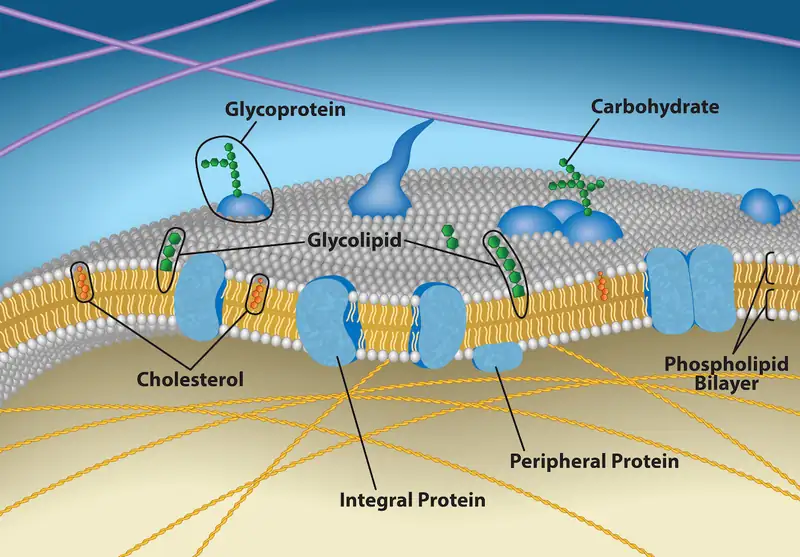
Recall that plasma membranes are amphiphilic: They have hydrophilic and hydrophobic regions. This characteristic helps move some materials through the membrane and hinders the movement of others. Non-polar and lipid-soluble material with a low molecular weight can easily slip through the membrane's hydrophobic lipid core. Substances such as the fat-soluble vitamins A, D, E, and K readily pass through the plasma membranes in the digestive tract and other tissues. Fat-soluble drugs and hormones also gain easy entry into cells and readily transport themselves into the body’s tissues and organs. Oxygen and carbon dioxide molecules have no charge and pass through membranes by simple diffusion.
Polar substances present problems for the membrane. While some polar molecules connect easily with the cell's outside, they cannot readily pass through the plasma membrane's lipid core. Additionally, while small ions could easily slip through the spaces in the membrane's mosaic, their charge prevents them from doing so. Ions such as sodium, potassium, calcium, and chloride must have special means of penetrating plasma membranes. Simple sugars and amino acids also need the help of various transmembrane proteins (channels) to transport themselves across plasma membranes.
Diffusion¶
Diffusion is a passive process of transport. A single substance moves from a high concentration to a low concentration area until the concentration is equal across a space. You are familiar with diffusion of substances through the air. For example, think about someone opening a bottle of ammonia in a room filled with people. The ammonia gas is at its highest concentration in the bottle. Its lowest concentration is at the room's edges. The ammonia vapor will diffuse, or spread away, from the bottle, and gradually, increasingly more people will smell the ammonia as it spreads. Materials move within the cell’s cytosol by diffusion, and certain materials move through the plasma membrane by diffusion (Figure 5.8). Diffusion expends no energy. On the contrary, concentration gradients are a form of potential energy, which dissipates as the gradient is eliminated.
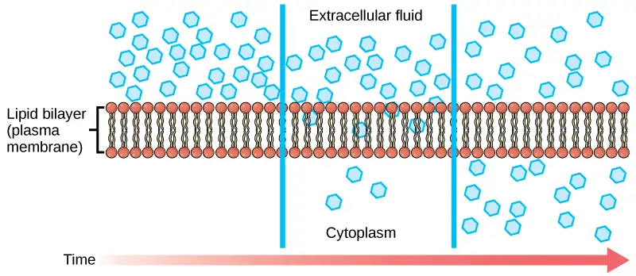
Each separate substance in a medium, such as the extracellular fluid, has its own concentration gradient, independent of other materials' concentration gradients. In addition, each substance will diffuse according to that gradient. Within a system, there will be different diffusion rates of various substances in the medium.
Factors That Affect Diffusion¶
Molecules move constantly in a random manner, at a rate that depends on their mass, their environment, and the amount of thermal energy they possess, which in turn is a function of temperature. This movement accounts for molecule diffusion through whatever medium in which they are localized. A substance moves into any space available to it until it evenly distributes itself throughout. After a substance has diffused completely through a space, removing its concentration gradient, molecules will still move around in the space, but there will be no net movement of the number of molecules from one area to another. We call this lack of a concentration gradient in which the substance has no net movement dynamic equilibrium. While diffusion will go forward in the presence of a substance's concentration gradient, several factors affect the diffusion rate.
- Extent of the concentration gradient: The greater the difference in concentration, the more rapid the diffusion. The closer the distribution of the material gets to equilibrium, the slower the diffusion rate.
- Mass of the molecules diffusing: Heavier molecules move more slowly; therefore, they diffuse more slowly. The reverse is true for lighter molecules.
- Temperature: Higher temperatures increase the energy and therefore the molecules' movement, increasing the diffusion rate. Lower temperatures decrease the molecules' energy, thus decreasing the diffusion rate.
- Solvent density: As the density of a solvent increases, the diffusion rate decreases. The molecules slow down because they have a more difficult time passing through the denser medium. If the medium is less dense, diffusion increases. Because cells primarily use diffusion to move materials within the cytoplasm, any increase in the cytoplasm’s density will inhibit the movement of the materials. An example of this is a person experiencing dehydration. As the body’s cells lose water, the diffusion rate decreases in the cytoplasm, and the cells’ functions deteriorate. Neurons tend to be very sensitive to this effect. Dehydration frequently leads to unconsciousness and possibly coma because of the decrease in diffusion rate within the cells.
- Solubility: As we discussed earlier, nonpolar or lipid-soluble materials pass through plasma membranes more easily than polar materials, allowing a faster diffusion rate.
- Surface area and plasma membrane thickness: Increased surface area increases the diffusion rate; whereas, a thicker membrane reduces it.
- Distance travelled: The greater the distance that a substance must travel, the slower the diffusion rate. This places an upper limitation on cell size. A large, spherical cell will die because nutrients or waste cannot reach or leave the cell's center, respectively. Therefore, cells must either be small in size, as in the case of many prokaryotes, or be flattened, as with many single-celled eukaryotes.
A variation of diffusion is the process of filtration. In filtration, material moves according to its concentration gradient through a membrane. Sometimes pressure enhances the diffusion rate, causing the substances to filter more rapidly. This occurs in the kidney, where blood pressure forces large amounts of water and accompanying dissolved substances, or solutes, out of the blood and into the renal tubules. The diffusion rate in this instance is almost totally dependent on pressure. One of the effects of high blood pressure is the appearance of protein in the urine, which abnormally high pressure "squeezes through".
Facilitated transport¶
In facilitated transport, or facilitated diffusion, materials diffuse across the plasma membrane with the help of membrane proteins. A concentration gradient exists that would allow these materials to diffuse into the cell without expending cellular energy. However, these materials are polar molecule ions that the cell membrane's hydrophobic parts repel. Facilitated transport proteins shield these materials from the membrane's repulsive force, allowing them to diffuse into the cell.
The transported material first attaches to protein or glycoprotein receptors on the plasma membrane's exterior surface. This allows removal of material from the extracellular fluid that the cell needs. The substances then pass to specific integral proteins that facilitate their passage. Some of these integral proteins are collections of beta-pleated sheets that form a pore or channel through the phospholipid bilayer. Others are carrier proteins which bind with the substance and aid its diffusion through the membrane.
Channels¶
The integral proteins involved in facilitated transport are transport proteins, and they function as either channels for the material or carriers. In both cases, they are transmembrane proteins. Channels are specific for the transported substance. Channel proteins have hydrophilic domains exposed to the intracellular and extracellular fluids. In addition, they have a hydrophilic channel through their core that provides a hydrated opening through the membrane layers (Figure 5.9). Passage through the channel allows polar compounds to avoid the plasma membrane's nonpolar central layer that would otherwise slow or prevent their entry into the cell. Aquaporins are channel proteins that allow water to pass through the membrane at a very high rate.
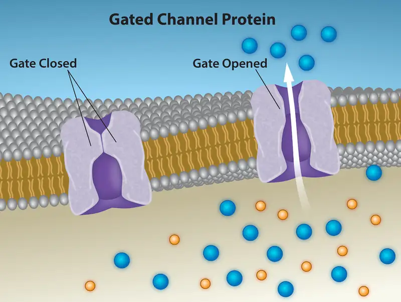
Channel proteins are either open at all times or they are “gated,” which controls the channel's opening. When a particular ion attaches to the channel protein it may control the opening, or other mechanisms or substances may be involved. In some tissues, sodium and chloride ions pass freely through open channels; whereas, in other tissues a gate must open to allow passage. An example of this occurs in the kidney, where there are both channel forms in different parts of the renal tubules. Cells involved in transmitting electrical impulses, such as nerve and muscle cells, have gated channels for sodium, potassium, and calcium in their membranes. Opening and closing these channels changes the relative concentrations on opposing sides of the membrane of these ions, resulting in facilitating electrical transmission along membranes (in the case of nerve cells) or in muscle contraction (in the case of muscle cells).
Carrier Proteins¶
Another type of protein embedded in the plasma membrane is a carrier protein. This aptly named protein binds a substance and, thus triggers a change of its own shape, moving the bound molecule from the cell's outside to its interior (Figure 5.10); depending on the gradient, the material may move in the opposite direction. Carrier proteins are typically specific for a single substance. This selectivity adds to the plasma membrane's overall selectivity. Scientists poorly understand the exact mechanism for the change of shape. Proteins can change shape when their hydrogen bonds are affected, but this may not fully explain this mechanism. Each carrier protein is specific to one substance, and there are a finite number of these proteins in any membrane. This can cause problems in transporting enough material for the cell to function properly. When all of the proteins are bound to their ligands, they are saturated and the rate of transport is at its maximum. Increasing the concentration gradient at this point will not result in an increased transport rate.
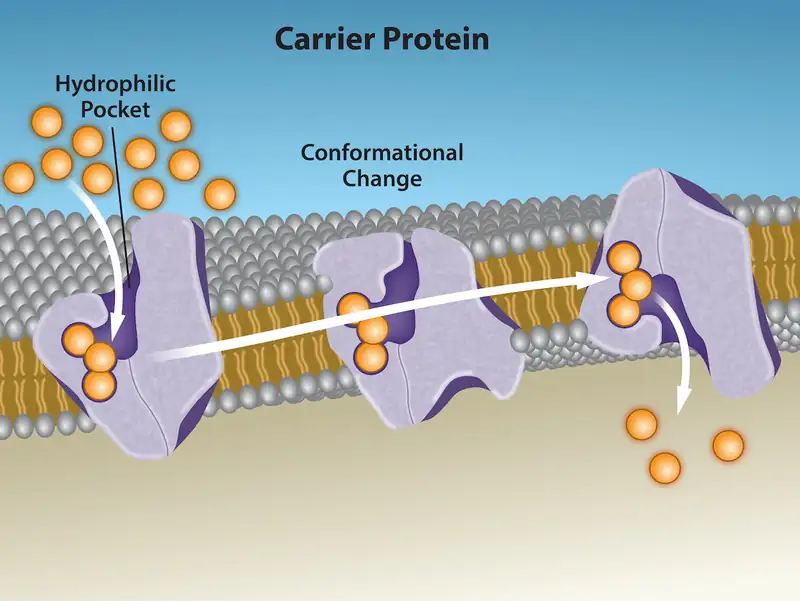
An example of this process occurs in the kidney. In one part, the kidney filters glucose, water, salts, ions, and amino acids that the body requires. This filtrate, which includes glucose, then reabsorbs in another part of the kidney. Because there are only a finite number of carrier proteins for glucose, if more glucose is present than the proteins can handle, the excess is not transported and the body excretes this through urine. In a diabetic individual, the term is “spilling glucose into the urine.” A different group of carrier proteins, glucose transport proteins, or GLUTs, are involved in transporting glucose and other hexose sugars through plasma membranes within the body.
Channel and carrier proteins transport material at different rates. Channel proteins transport much more quickly than carrier proteins. Channel proteins facilitate diffusion at a rate of tens of millions of molecules per second; whereas, carrier proteins work at a rate of a thousand to a million molecules per second.
Osmosis¶
Osmosis is the movement of free water molecules through a semipermeable membrane according to the water's concentration gradient across the membrane, which is inversely proportional to the solutes' concentration. While diffusion transports material across membranes and within cells, osmosis transports only water across a membrane and the membrane limits the solutes' diffusion in the water. Not surprisingly, the aquaporins that facilitate water movement play a large role in osmosis, most prominently in red blood cells and the membranes of kidney tubules.
Mechanism¶
Osmosis is a special case of diffusion. Water, like other substances, moves from an area of high concentration of free water molecules to one of low free water molecule concentration. An obvious question is what makes water move at all? Imagine a beaker with a semipermeable membrane separating the two sides or halves (Figure 5.11). On both sides of the membrane the water level is the same, but there are different dissolved substance concentrations, or solute, that cannot cross the membrane (otherwise the solute crossing the membrane would balance concentrations on each side). If the solution's volume on both sides of the membrane is the same, but the solute's concentrations are different, then there are different amounts of water, the solvent, on either side of the membrane.
![This illustration shows a container whose contents are separated by a semipermeable membrane. Initially, there is a high concentration of solute on the right side of the membrane and a low concentration of the left. Over time, water diffuses across the membrane toward the side of the container that initially had a higher concentration of solute (lower concentration of water). As a result of osmosis, the water level is higher on this side of the membrane, and the solute concentration is the same on both sides.](img/figure-05-02-06-d985.webp)
To illustrate this, imagine two full water glasses. One has a single teaspoon of sugar in it; whereas, the second one contains one-quarter cup of sugar. If the total volume of the solutions in both cups is the same, which cup contains more water? Because the large sugar amount in the second cup takes up much more space than the teaspoon of sugar in the first cup, the first cup has more water in it.
Returning to the beaker example, recall that it has a solute mixture on either side of the membrane. A principle of diffusion is that the molecules move around and will spread evenly throughout the medium if they can. However, only the material capable of getting through the membrane will diffuse through it. In this example, the solute cannot diffuse through the membrane, but the water can. Water has a concentration gradient in this system. Thus, water will diffuse down its concentration gradient, crossing the membrane to the side where it is less concentrated. This diffusion of water through the membrane—osmosis—will continue until the water's concentration gradient goes to zero or until the water's hydrostatic pressure balances the osmotic pressure. Osmosis proceeds constantly in living systems.
Tonicity¶
Tonicity describes how an extracellular solution can change a cell's volume by affecting osmosis. A solution's tonicity often directly correlates with the solution's osmolarity. Osmolarity describes the solution's total solute concentration. A solution with low osmolarity has a greater number of water molecules relative to the number of solute particles. A solution with high osmolarity has fewer water molecules with respect to solute particles. In a situation in which a membrane permeable to water, though not to the solute separates two different osmolarities, water will move from the membrane's side with lower osmolarity (and more water) to the side with higher osmolarity (and less water). This effect makes sense if you remember that the solute cannot move across the membrane, and thus the only component in the system that can move—the water—moves along its own concentration gradient. An important distinction that concerns living systems is that osmolarity measures the number of particles (which may be molecules) in a solution. Therefore, a solution that is cloudy with cells may have a lower osmolarity than a solution that is clear, if the second solution contains more dissolved molecules than there are cells.
Hypotonic Solutions¶
Scientists use three terms—hypotonic, isotonic, and hypertonic—to relate the cell's osmolarity to the extracellular fluid's osmolarity that contains the cells. In a hypotonic situation, the extracellular fluid has lower osmolarity than the fluid inside the cell, and water enters the cell. (In living systems, the point of reference is always the cytoplasm, so the prefix hypo- means that the extracellular fluid has a lower solute concentration, or a lower osmolarity, than the cell cytoplasm.) It also means that the extracellular fluid has a higher water concentration in the solution than does the cell. In this situation, water will follow its concentration gradient and enter the cell.
Hypertonic Solutions¶
As for a hypertonic solution, the prefix hyper- refers to the extracellular fluid having a higher osmolarity than the cell’s cytoplasm; therefore, the fluid contains less water than the cell does. Because the cell has a relatively higher water concentration, water will leave the cell.
Isotonic Solutions¶
In an isotonic solution, the extracellular fluid has the same osmolarity as the cell. If the cell's osmolarity matches that of the extracellular fluid, there will be no net movement of water into or out of the cell, although water will still move in and out. Blood cells and plant cells in hypertonic, isotonic, and hypotonic solutions take on characteristic appearances (Figure 5.12).
Visual Connection
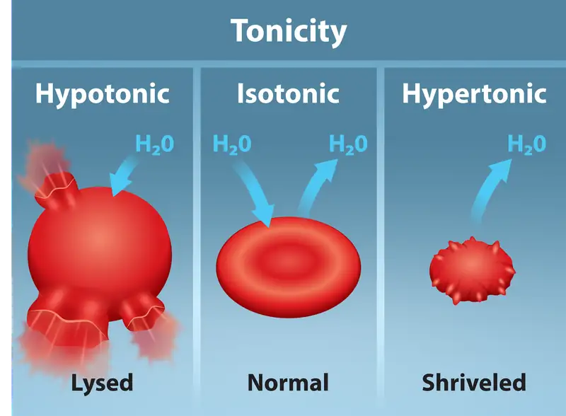
A doctor injects a patient with what the doctor thinks is an isotonic saline solution. The patient dies, and an autopsy reveals that many red blood cells have been destroyed. Do you think the solution the doctor injected was really isotonic?
Interactive
For a video illustrating the diffusion process in solutions, visit this site.
Tonicity in Living Systems¶
In a hypotonic environment, water enters a cell, and the cell swells. In an isotonic condition, the relative solute and solvent concentrations are equal on both membrane sides. There is no net water movement; therefore, there is no change in the cell's size. In a hypertonic solution, water leaves a cell and the cell shrinks. If either the hypo- or hyper- condition goes to excess, the cell’s functions become compromised, and the cell may be destroyed.
A red blood cell will burst, or lyse, when it swells beyond the plasma membrane’s capability to expand. Remember, the membrane resembles a mosaic, with discrete spaces between the molecules comprising it. If the cell swells, and the spaces between the lipids and proteins become too large, the cell will break apart.
In contrast, when excessive water amounts leave a red blood cell, the cell shrinks, or crenates. This has the effect of concentrating the solutes left in the cell, making the cytosol denser and interfering with diffusion within the cell. The cell’s ability to function will be compromised and may also result in the cell's death.
Various living things have ways of controlling the effects of osmosis—a mechanism we call osmoregulation. Some organisms, such as plants, fungi, bacteria, and some protists, have cell walls that surround the plasma membrane and prevent cell lysis in a hypotonic solution. The plasma membrane can only expand to the cell wall's limit, so the cell will not lyse. The cytoplasm in plants is always slightly hypertonic to the cellular environment, and water will always enter a cell if water is available. This water inflow produces turgor pressure, which stiffens the plant's cell walls (Figure 5.13). In nonwoody plants, turgor pressure supports the plant. Conversely, if you do not water the plant, the extracellular fluid will become hypertonic, causing water to leave the cell. In this condition, the cell does not shrink because the cell wall is not flexible. However, the cell membrane detaches from the wall and constricts the cytoplasm. We call this plasmolysis. Plants lose turgor pressure in this condition and wilt (Figure 5.14).
![The left part of this image shows a plant cell bathed in a hypertonic solution so that the plasma membrane has pulled away completely from the cell wall, and the central vacuole has shrunk. Water moves out of the plant cell. The middle part shows a plant cell bathed in an isotonic solution; the plasma membrane has pulled away from the cell wall a bit, and the central vacuole size is unchanged. Water moves both in and out of the plant cell. The right part shows a plant cell in a hypotonic solution. The central vacuole is large, and the plasma membrane is pressed against the cell wall. Water is moving into the plant cell.](img/figure-05-02-08-2288.webp)
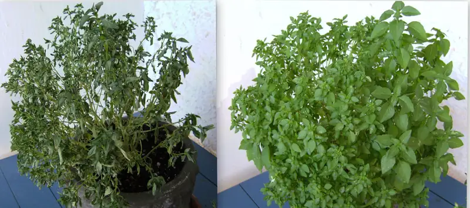
Tonicity is a concern for all living things. For example, paramecia and amoebas, which are protists that lack cell walls, have contractile vacuoles. This vesicle collects excess water from the cell and pumps it out, keeping the cell from lysing as it takes on water from its environment (Figure 5.15).
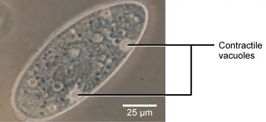
Many marine invertebrates have internal salt levels matched to their environments, making them isotonic with the water in which they live. Fish, however, must spend approximately five percent of their metabolic energy maintaining osmotic homeostasis. Freshwater fish live in an environment that is hypotonic to their cells. These fish actively take in salt through their gills and excrete diluted urine to rid themselves of excess water. Saltwater fish live in the reverse environment, which is hypertonic to their cells, and they secrete salt through their gills and excrete highly concentrated urine.
In vertebrates, the kidneys regulate the water amount in the body. Osmoreceptors are specialized cells in the brain that monitor solute concentration in the blood. If the solute levels increase beyond a certain range, a hormone releases that slows water loss through the kidney and dilutes the blood to safer levels. Animals also have high albumin concentrations, which the liver produces, in their blood. This protein is too large to pass easily through plasma membranes and is a major factor in controlling the osmotic pressures applied to tissues.
5.3 Active Transport¶
Learning Objectives
By the end of this section, you will be able to do the following:
- Understand how electrochemical gradients affect ions
- Distinguish between primary active transport and secondary active transport
Active transport mechanisms require the cell’s energy, usually in the form of adenosine triphosphate (ATP). If a substance must move into the cell against its concentration gradient—that is, if the substance's concentration inside the cell is greater than its concentration in the extracellular fluid (and vice versa)—the cell must use energy to move the substance. Some active transport mechanisms move small-molecular weight materials, such as ions, through the membrane. Other mechanisms transport much larger molecules.
Electrochemical Gradient¶
We have discussed simple concentration gradients—a substance's differential concentrations across a space or a membrane—but in living systems, gradients are more complex. Because ions move into and out of cells and because cells contain proteins that do not move across the membrane and are mostly negatively charged, there is also an electrical gradient, a difference of charge, across the plasma membrane. The interior of living cells is electrically negative with respect to the extracellular fluid in which they are bathed, and at the same time, cells have higher concentrations of potassium (K+) and lower concentrations of sodium (Na+) than the extracellular fluid. Thus in a living cell, the concentration gradient of Na+ tends to drive it into the cell, and its electrical gradient (a positive ion) also drives it inward to the negatively charged interior. However, the situation is more complex for other elements such as potassium. The electrical gradient of K+, a positive ion, also drives it into the cell, but the concentration gradient of K+ drives K+ out of the cell (Figure 5.16). We call the combined concentration gradient and electrical charge that affects an ion its electrochemical gradient.
Visual Connection
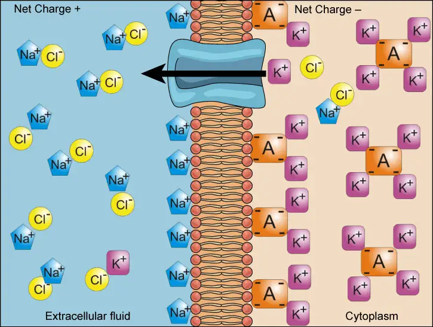
Injecting a potassium solution into a person’s blood is lethal. This is how capital punishment and euthanasia subjects die. Why do you think a potassium solution injection is lethal?
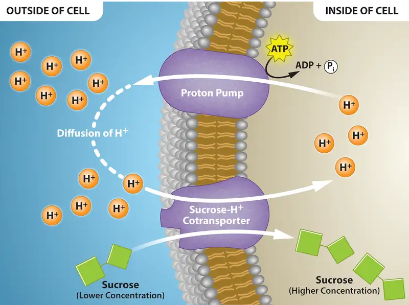
Moving Against a Gradient¶
To move substances against a concentration or electrochemical gradient, the cell must use energy. This energy comes from ATP generated through the cell’s metabolism. Active transport mechanisms, or pumps, work against electrochemical gradients. Small substances constantly pass through plasma membranes. Active transport maintains concentrations of ions and other substances that living cells require in the face of these passive movements. A cell may spend much of its metabolic energy supply maintaining these processes. (A red blood cell uses most of its metabolic energy to maintain the imbalance between exterior and interior sodium and potassium levels that the cell requires.) Because active transport mechanisms depend on a cell’s metabolism for energy, they are sensitive to many metabolic poisons that interfere with the ATP supply.
Two mechanisms exist for transporting small-molecular weight material and small molecules. Primary active transport moves ions across a membrane and creates a difference in charge across that membrane, which is directly dependent on ATP. Secondary active transport does not directly require ATP: instead, it is the movement of material due to the electrochemical gradient established by primary active transport (Figure 5.19).
Carrier Proteins for Active Transport¶
An important membrane adaptation for active transport is the presence of specific carrier proteins or pumps to facilitate movement: there are three protein types or transporters (Figure 5.18). A uniporter carries one specific ion or molecule. A symporter carries two different ions or molecules, both in the same direction. An antiporter also carries two different ions or molecules, but in different directions. All of these transporters can also transport small, uncharged organic molecules like glucose. These three types of carrier proteins are also in facilitated diffusion, but they do not require ATP to work in that process. Some examples of pumps for active transport are Na+-K+ ATPase, which carries sodium and potassium ions, and H+-K+ ATPase, which carries hydrogen and potassium ions. Both of these are antiporter carrier proteins. Two other carrier proteins are Ca2+ ATPase and H+ ATPase, which carry only calcium and only hydrogen ions, respectively. Both are pumps.
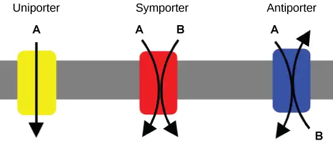
Primary Active Transport¶
The primary active transport that functions with the active transport of sodium and potassium allows secondary active transport to occur. The second transport method is still active because it depends on using energy as does primary transport (Figure 5.19).
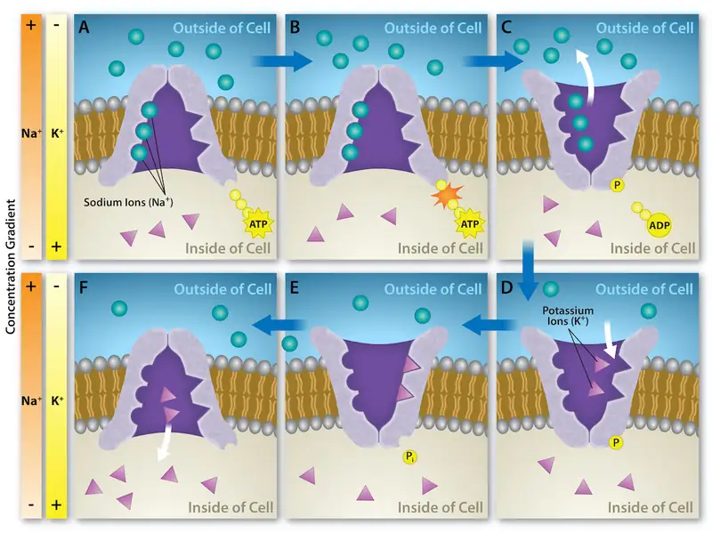
One of the most important pumps in animal cells is the sodium-potassium pump (Na+-K+ ATPase), which maintains the electrochemical gradient (and the correct concentrations of Na+ and K+) in living cells. The sodium-potassium pump moves K+ into the cell while moving Na+ out at the same time, at a ratio of three Na+ for every two K+ ions moved in. The Na+-K+ ATPase exists in two forms, depending on its orientation to the cell's interior or exterior and its affinity for either sodium or potassium ions. The process consists of the following six steps.
- With the enzyme oriented towards the cell's interior, the carrier has a high affinity for sodium ions. Three ions bind to the protein.
- The protein carrier hydrolyzes ATP and a low-energy phosphate group attaches to it.
- As a result, the carrier changes shape and reorients itself towards the membrane's exterior. The protein’s affinity for sodium decreases and the three sodium ions leave the carrier.
- The shape change increases the carrier’s affinity for potassium ions, and two such ions attach to the protein. Subsequently, the low-energy phosphate group detaches from the carrier.
- With the phosphate group removed and potassium ions attached, the carrier protein repositions itself towards the cell's interior.
- The carrier protein, in its new configuration, has a decreased affinity for potassium, and the two ions moves into the cytoplasm. The protein now has a higher affinity for sodium ions, and the process starts again.
Several things have happened as a result of this process. At this point, there are more sodium ions outside the cell than inside and more potassium ions inside than out. For every three sodium ions that move out, two potassium ions move in. This results in the interior being slightly more negative relative to the exterior. This difference in charge is important in creating the conditions necessary for the secondary process. The sodium-potassium pump is, therefore, an electrogenic pump (a pump that creates a charge imbalance), creating an electrical imbalance across the membrane and contributing to the membrane potential.
Interactive
Watch this video to see an active transport simulation in a sodium-potassium ATPase.
Secondary Active Transport (Co-transport)¶
Secondary active transport uses the kinetic energy of the sodium ions to bring other compounds, against their concentration gradient into the cell. As sodium ion concentrations build outside of the plasma membrane because of the primary active transport process, this creates an electrochemical gradient. If a channel protein exists and is open, the sodium ions will move down its concentration gradient across the membrane. This movement transports other substances that must be attached to the same transport protein in order for the sodium ions to move across the membrane (Figure 5.20). Many amino acids, as well as glucose, enter a cell this way. This secondary process also stores high-energy hydrogen ions in the mitochondria of plant and animal cells in order to produce ATP. The potential energy that accumulates in the stored hydrogen ions translates into kinetic energy as the ions surge through the channel protein ATP synthase, and that energy then converts ADP into ATP.
Visual Connection
![This illustration shows a membrane bilayer with two integral membrane proteins embedded in it. The first, a sodium-potassium pump, uses energy from A T P hydrolysis to pump three sodium ions out of the cell for every two potassium ions it pumps into the cell. The result is a high concentration of sodium outside the cell and a high concentration of potassium inside the cell. There is also a low concentration of glucose outside the cell, and a high concentration inside. A sodium-amino acid co-transporter simultaneously transports sodium and the glucose into the cell. Text within the image reads as follows: Primary Active Transport: the sodium potassium pump moves sodium ions using the energy of ATP hydrolysis to establish a concentration gradient of sodium ions. Secondary active transport: Sodium ions moving with the concentration gradient established by the sodium potassium pump drives the transport of glucose against its concentration gradient.](img/figure-05-03-04-851f.webp)
If the pH outside the cell decreases, would you expect the amount of amino acids transported into the cell to increase or decrease?
5.4 Bulk Transport¶
Learning Objectives
By the end of this section, you will be able to do the following:
- Describe endocytosis, including phagocytosis, pinocytosis, and receptor-mediated endocytosis
- Understand the process of exocytosis
In addition to moving small ions and molecules through the membrane, cells also need to remove and take in larger molecules and particles (see Table 5.2 for examples). Some cells are even capable of engulfing entire unicellular microorganisms. You might have correctly hypothesized that when a cell uptakes and releases large particles, it requires energy. A large particle, however, cannot pass through the membrane, even with energy that the cell supplies.
Endocytosis¶
Endocytosis is a type of active transport that moves particles, such as large molecules, parts of cells, and even whole cells, into a cell. There are different endocytosis variations, but all share a common characteristic: the cell's plasma membrane invaginates, forming a pocket around the target particle. The pocket pinches off, resulting in the particle containing itself in a newly created intracellular vesicle formed from the plasma membrane.
Phagocytosis¶
Phagocytosis (the condition of “cell eating”) is the process by which a cell takes in large particles, such as other cells or relatively large particles. For example, when microorganisms invade the human body, a type of white blood cell, a neutrophil, will remove the invaders through this process, surrounding and engulfing the microorganism, which the neutrophil then destroys (Figure 5.21).
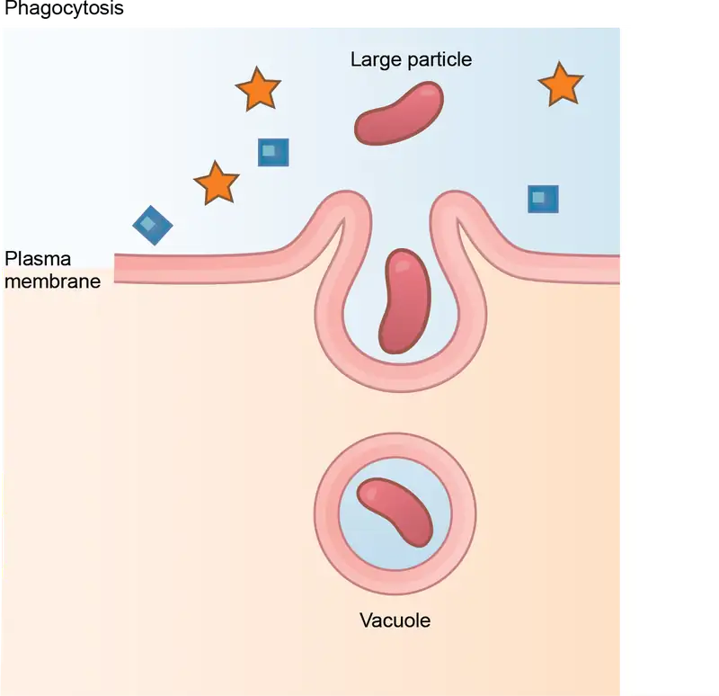
In preparation for phagocytosis, a portion of the plasma membrane's inward-facing surface becomes coated with the protein clathrin, which stabilizes this membrane's section. The membrane's coated portion then extends from the cell's body and surrounds the particle, eventually enclosing it. Once the vesicle containing the particle is enclosed within the cell, the clathrin disengages from the membrane and the vesicle merges with a lysosome for breaking down the material in the newly formed compartment (endosome). When accessible nutrients from the vesicular contents' degradation have been extracted, the newly formed endosome merges with the plasma membrane and releases its contents into the extracellular fluid. The endosomal membrane again becomes part of the plasma membrane.
Pinocytosis¶
A variation of endocytosis is pinocytosis. This literally means “cell drinking”. Discovered by Warren Lewis in 1929, this American embryologist and cell biologist described a process whereby he assumed that the cell was purposefully taking in extracellular fluid. In reality, this is a process that takes in molecules, including water, which the cell needs from the extracellular fluid. Pinocytosis results in a much smaller vesicle than does phagocytosis, and the vesicle does not need to merge with a lysosome (Figure 5.22).
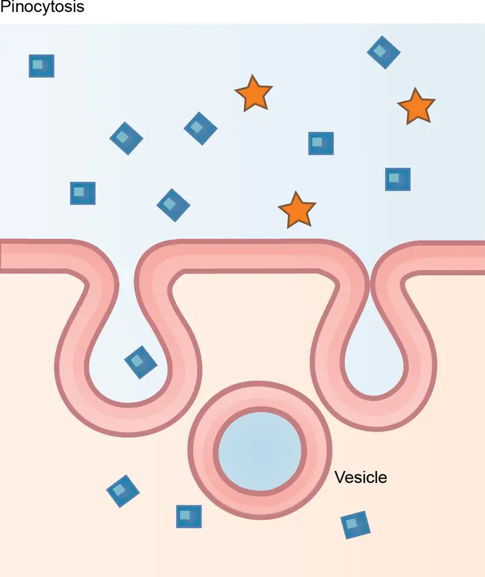
A variation of pinocytosis is potocytosis. This process uses a coating protein, caveolin, on the plasma membrane's cytoplasmic side, which performs a similar function to clathrin. The cavities in the plasma membrane that form the vacuoles have membrane receptors and lipid rafts in addition to caveolin. The vacuoles or vesicles formed in caveolae (singular caveola) are smaller than those in pinocytosis. Potocytosis brings small molecules into the cell and transports them through the cell for their release on the other side, a process we call transcytosis. In some cases, the caveolae deliver their cargo to membranous organelles like the ER.
Receptor-mediated Endocytosis¶
A targeted variation of endocytosis employs receptor proteins in the plasma membrane that have a specific binding affinity for certain substances (Figure 5.23).
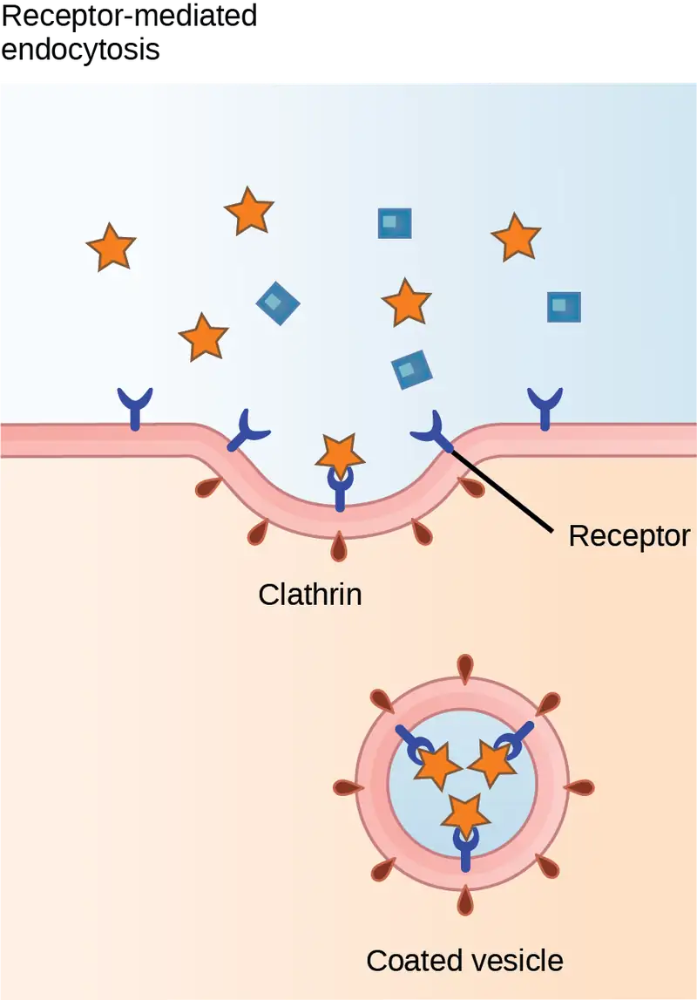
In receptor-mediated endocytosis, as in phagocytosis, clathrin attaches to the plasma membrane's cytoplasmic side. If a compound's uptake is dependent on receptor-mediated endocytosis and the process is ineffective, the material will not be removed from the tissue fluids or blood. Instead, it will stay in those fluids and increase in concentration. The failure of receptor-mediated endocytosis causes some human diseases. For example, receptor mediated endocytosis removes low density lipoprotein or LDL (or "bad" cholesterol) from the blood. In the human genetic disease familial hypercholesterolemia, the LDL receptors are defective or missing entirely. People with this condition have life-threatening levels of cholesterol in their blood, because their cells cannot clear LDL particles.
Although receptor-mediated endocytosis is designed to bring specific substances that are normally in the extracellular fluid into the cell, other substances may gain entry into the cell at the same site. Flu viruses, diphtheria, and cholera toxin all have sites that cross-react with normal receptor-binding sites and gain entry into cells.
Interactive
See receptor-mediated endocytosis in action, and click on different parts for a focused animation.
Exocytosis¶
The reverse process of moving material into a cell is the process of exocytosis. Exocytosis is the opposite of the processes we discussed above in that its purpose is to expel material from the cell into the extracellular fluid. Waste material is enveloped in a membrane and fuses with the plasma membrane's interior. This fusion opens the membranous envelope on the cell's exterior, and the waste material expels into the extracellular space (Figure 5.24). Other examples of cells releasing molecules via exocytosis include extracellular matrix protein secretion and neurotransmitter secretion into the synaptic cleft by synaptic vesicles.
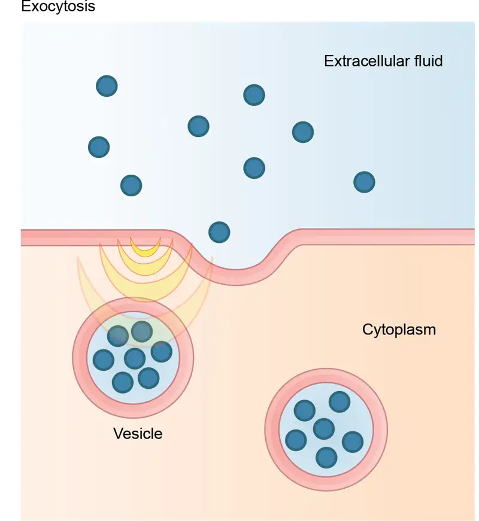
Table 5.2
| Methods of Transport, Energy Requirements, and Types of Transported Material | ||
|---|---|---|
| Transport Method | Active/Passive | Material Transported |
| Diffusion | Passive | Small-molecular weight material |
| Osmosis | Passive | Water |
| Facilitated transport/diffusion | Passive | Sodium, potassium, calcium, glucose |
| Primary active transport | Active | Sodium, potassium, calcium |
| Secondary active transport | Active | Amino acids, lactose |
| Phagocytosis | Active | Large macromolecules, whole cells, or cellular structures |
| Pinocytosis and potocytosis | Active | Small molecules (liquids/water) |
| Receptor-mediated endocytosis | Active | Large quantities of macromolecules |
Chapter Review¶
Key Terms¶
- active transport
- method of transporting material that requires energy
- amphiphilic
- molecule possessing a polar or charged area and a nonpolar or uncharged area capable of interacting with both hydrophilic and hydrophobic environments
- antiporter
- transporter that carries two ions or small molecules in different directions
- aquaporin
- channel protein that allows water through the membrane at a very high rate
- carrier protein
- membrane protein that moves a substance across the plasma membrane by changing its own shape
- caveolin
- protein that coats the plasma membrane's cytoplasmic side and participates in the liquid uptake process by potocytosis
- channel protein
- membrane protein that allows a substance to pass through its hollow core across the plasma membrane
- clathrin
- protein that coats the plasma membrane's inward-facing surface and assists in forming specialized structures, like coated pits, for phagocytosis
- concentration gradient
- area of high concentration adjacent to an area of low concentration
- diffusion
- passive transport process of low-molecular weight material according to its concentration gradient
- electrochemical gradient
- a combined electrical and chemical force that produces a gradient
- electrogenic pump
- pump that creates a charge imbalance
- endocytosis
- type of active transport that moves substances, including fluids and particles, into a cell
- exocytosis
- process of passing bulk material out of a cell
- facilitated transport
- process by which material moves down a concentration gradient (from high to low concentration) using integral membrane proteins
- fluid mosaic model
- describes the plasma membrane's structure as a mosaic of components including phospholipids, cholesterol, proteins, glycoproteins, and glycolipids (sugar chains attached to proteins or lipids, respectively), resulting in a fluid character (fluidity)
- glycolipid
- combination of carbohydrates and lipids
- glycoprotein
- combination of carbohydrates and proteins
- hydrophilic
- molecule with the ability to bond with water; “water-loving”
- hydrophobic
- molecule that does not have the ability to bond with water; “water-hating”
- hypertonic
- situation in which extracellular fluid has a higher osmolarity than the fluid inside the cell, resulting in water moving out of the cell
- hypotonic
- situation in which extracellular fluid has a lower osmolarity than the fluid inside the cell, resulting in water moving into the cell
- integral protein
- protein integrated into the membrane structure that interacts extensively with the membrane lipids' hydrocarbon chains and often spans the membrane
- isotonic
- situation in which the extracellular fluid has the same osmolarity as the fluid inside the cell, resulting in no net water movement into or out of the cell
- osmolarity
- total amount of solutes dissolved in a specific amount of solution
- osmosis
- transport of water through a semipermeable membrane according to the water's concentration gradient across the membrane that results from the presence of solute that cannot pass through the membrane
- passive transport
- method of transporting material through a membrane that does not require energy
- peripheral protein
- protein at the plasma membrane's surface either on its exterior or interior side
- pinocytosis
- a variation of endocytosis that imports macromolecules that the cell needs from the extracellular fluid
- plasmolysis
- detaching the cell membrane from the cell wall and constricting the cell membrane when a plant cell is in a hypertonic solution
- potocytosis
- variation of pinocytosis that uses a different coating protein (caveolin) on the plasma membrane's cytoplasmic side
- primary active transport
- active transport that moves ions or small molecules across a membrane and may create a difference in charge across that membrane
- pump
- active transport mechanism that works against electrochemical gradients
- receptor-mediated endocytosis
- variation of endocytosis that involves using specific binding proteins in the plasma membrane for specific molecules or particles, and clathrin-coated pits that become clathrin-coated vesicles
- secondary active transport
- movement of material that results from primary active transport to the electrochemical gradient
- selectively permeable
- membrane characteristic that allows some substances through (also known as semipermeable)
- solute
- substance dissolved in a liquid to form a solution
- symporter
- transporter that carries two different ions or small molecules, both in the same direction
- tonicity
- amount of solute in a solution
- transport protein
- membrane protein that facilitates a substance's passage across a membrane by binding it
- transporter
- specific carrier proteins or pumps that facilitate movement
- uniporter
- transporter that carries one specific ion or molecule
Summary¶
5.1 Components and Structure¶
Modern scientists refer to the plasma membrane as the fluid mosaic model. A phospholipid bilayer comprises the plasma membrane, with hydrophobic, fatty acid tails in contact with each other. The membrane's landscape is studded with proteins, some which span the membrane. Some of these proteins serve to transport materials into or out of the cell. Carbohydrates are attached to some of the proteins and lipids on the membrane's outward-facing surface, forming complexes that function to identify the cell to other cells. The membrane's fluid nature is due to temperature, fatty acid tail configuration (some kinked by double bonds), cholesterol presence embedded in the membrane, and the mosaic nature of the proteins and protein-carbohydrate combinations, which are not firmly fixed in place. Plasma membranes enclose and define the cells' borders. Not static, they are dynamic and constantly in flux.
5.2 Passive Transport¶
The passive transport forms, diffusion and osmosis, move materials of small molecular weight across membranes. Substances diffuse from high to lower concentration areas, and this process continues until the substance evenly distributes itself in a system. In solutions containing more than one substance, each molecule type diffuses according to its own concentration gradient, independent of other substances diffusing. Many factors can affect the diffusion rate, such as concentration gradient, diffusing, particle sizes, and the system's temperature.
In living systems, the plasma membrane mediates substances diffusing in and out of cells. Some materials diffuse readily through the membrane, but others are hindered and only can pass through due to specialized proteins such as channels and transporters. The chemistry of living things occurs in aqueous solutions, and balancing the concentrations of those solutions is an ongoing problem. In living systems, diffusing some substances would be slow or difficult without membrane proteins that facilitate transport.
5.3 Active Transport¶
The combined gradient that affects an ion includes its concentration gradient and its electrical gradient. A positive ion, for example, might diffuse into a new area, down its concentration gradient, but if it is diffusing into an area of net positive charge, its electrical gradient hampers its diffusion. When dealing with ions in aqueous solutions, one must consider electrochemical and concentration gradient combinations, rather than just the concentration gradient alone. Living cells need certain substances that exist inside the cell in concentrations greater than they exist in the extracellular space. Moving substances up their electrochemical gradients requires energy from the cell. Active transport uses energy stored in ATP to fuel this transport. Active transport of small molecular-sized materials uses integral proteins in the cell membrane to move the materials. These proteins are analogous to pumps. Some pumps, which carry out primary active transport, couple directly with ATP to drive their action. In co-transport (or secondary active transport), energy from primary transport can move another substance into the cell and up its concentration gradient.
5.4 Bulk Transport¶
Active transport methods require directly using ATP to fuel the transport. In a process scientists call phagocytosis, other cells can engulf large particles, such as macromolecules, cell parts, or whole cells. In phagocytosis, a portion of the membrane invaginates and flows around the particle, eventually pinching off and leaving the particle entirely enclosed by a plasma membrane's envelope. The cell breaks down vesicle contents, with the particles either used as food or dispatched. Pinocytosis is a similar process on a smaller scale. The plasma membrane invaginates and pinches off, producing a small envelope of fluid from outside the cell. Pinocytosis imports substances that the cell needs from the extracellular fluid. The cell expels waste in a similar but reverse manner. It pushes a membranous vacuole to the plasma membrane, allowing the vacuole to fuse with the membrane and incorporate itself into the membrane structure, releasing its contents to the exterior.
Review Questions¶
5.1 Components and Structure¶
1. Which plasma membrane component can be either found on its surface or embedded in the membrane structure?
- protein
- cholesterol
- carbohydrate
- phospholipid
Answer
A
2. Which characteristic of a phospholipid contributes to the fluidity of the membrane?
- its head
- cholesterol
- a saturated fatty acid tail
- double bonds in the fatty acid tail
Answer
D
3. What is the primary function of carbohydrates attached to the exterior of cell membranes?
- identification of the cell
- flexibility of the membrane
- strengthening the membrane
- channels through membrane
Answer
A
4. A scientist compares the plasma membrane composition of an animal from the Mediterranean coast with one from the Mojave Desert. Which hypothesis is most likely to be correct?
- The cells from the Mediterranean coast animal will have more fluid plasma membranes.
- The cells from the Mojave Desert animal will have a higher cholesterol concentration in the plasma membranes.
- The cells’ plasma membranes will be indistinguishable.
- The cells from the Mediterranean coast animal will have a higher glycoprotein content, while the cells from the Mojave Desert animal will have a higher lipoprotein content.
Answer
B
5.2 Passive Transport¶
5. Water moves via osmosis _________.
- throughout the cytoplasm
- from an area with a high concentration of other solutes to a lower one
- from an area with a high concentration of water to one of lower concentration
- from an area with a low concentration of water to higher concentration
Answer
C
6. The principal force driving movement in diffusion is the __________.
- temperature
- particle size
- concentration gradient
- membrane surface area
Answer
C
7. What problem is faced by organisms that live in fresh water?
- Their bodies tend to take in too much water.
- They have no way of controlling their tonicity.
- Only salt water poses problems for animals that live in it.
- Their bodies tend to lose too much water to their environment.
Answer
A
8. In which situation would passive transport not use a transport protein for entry into a cell?
- water flowing into a hypertonic environment
- glucose being absorbed from the blood
- an ion flowing into a nerve cell to create an electrical potential
- oxygen moving into a cell after oxygen deprivation
Answer
D
5.3 Active Transport¶
9. Active transport must function continuously because __________.
- plasma membranes wear out
- not all membranes are amphiphilic
- facilitated transport opposes active transport
- diffusion is constantly moving solutes in opposite directions
Answer
D
10. How does the sodium-potassium pump make the interior of the cell negatively charged?
- by expelling anions
- by pulling in anions
- by expelling more cations than are taken in
- by taking in and expelling an equal number of cations
Answer
C
11. What is the combination of an electrical gradient and a concentration gradient called?
- potential gradient
- electrical potential
- concentration potential
- electrochemical gradient
Answer
D
5.4 Bulk Transport¶
12. What happens to the membrane of a vesicle after exocytosis?
- It leaves the cell.
- It is disassembled by the cell.
- It fuses with and becomes part of the plasma membrane.
- It is used again in another exocytosis event.
Answer
C
13. Which transport mechanism can bring whole cells into a cell?
- pinocytosis
- phagocytosis
- facilitated transport
- primary active transport
Answer
B
14. In what important way does receptor-mediated endocytosis differ from phagocytosis?
- It transports only small amounts of fluid.
- It does not involve the pinching off of membrane.
- It brings in only a specifically targeted substance.
- It brings substances into the cell, while phagocytosis removes substances.
Answer
C
15. Many viruses enter host cells through receptor-mediated endocytosis. What is an advantage of this entry strategy?
- The virus directly enters the cytoplasm of the cell.
- The virus is protected from recognition by white blood cells.
- The virus only enters its target host cell type.
- The virus can directly inject its genome into the cell’s nucleus.
Answer
C
16. Which of the following organelles relies on exocytosis to complete its function?
- Golgi apparatus
- vacuole
- mitochondria
- endoplasmic reticulum
Answer
A
17. Imagine a cell can perform exocytosis, but only minimal endocytosis. What would happen to the cell?
- The cell would secrete all its intracellular proteins.
- The plasma membrane would increase in size over time.
- The cell would stop expressing integral receptor proteins in its plasma membrane.
- The cell would lyse.
Answer
B
Critical Thinking Questions¶
5.1 Components and Structure¶
18. Why is it advantageous for the cell membrane to be fluid in nature?
Answer
The fluid characteristic of the cell membrane allows greater flexibility to the cell than it would if the membrane were rigid. It also allows the motion of membrane components, required for some types of membrane transport.
19. Why do phospholipids tend to spontaneously orient themselves into something resembling a membrane?
Answer
The hydrophobic, nonpolar regions must align with each other in order for the structure to have minimal potential energy and, consequently, higher stability. The fatty acid tails of the phospholipids cannot mix with water, but the phosphate “head” of the molecule can. Thus, the head orients to water, and the tail to other lipids.
20. How can a cell use an extracellular peripheral protein as the receptor to transmit a signal into the cell?
Answer
Peripheral proteins can bind to other molecules in the extracellular space. However, they cannot directly transmit a signal to the inside of the cell since they do not have a transmembrane domain (region that goes through the plasma membrane to the inside of the cell). They must associate with integral membrane proteins in order to pass the signal to the inside of the cell.
5.2 Passive Transport¶
21. Which explanation identifies how the following affect the rate of diffusion: molecular size, temperature, solution density, and the distance that must be traveled?
Answer
Heavy molecules move more slowly than lighter ones. It takes more energy in the medium to move them along. Increasing or decreasing temperature increases or decreases the energy in the medium, affecting molecular movement. The denser a solution is, the harder it is for molecules to move through it, causing diffusion to slow down due to friction. Living cells require a steady supply of nutrients and a steady rate of waste removal. If the distance these substances need to travel is too great, diffusion cannot move nutrients and waste materials efficiently to sustain life.
22. Why does water move through a membrane?
Answer
Water moves through a membrane in osmosis because there is a concentration gradient across the membrane of solute and solvent. The solute cannot effectively move to balance the concentration on both sides of the membrane, so water moves to achieve this balance.
23. Both of the regular intravenous solutions administered in medicine, normal saline and lactated Ringer’s solution, are isotonic. Why is this important?
Answer
Injection of isotonic solutions ensures that there will be no perturbation of the osmotic balance, and no water taken from tissues or added to them from the blood.
24. Describe two ways that decreasing temperature would affect the rate of diffusion of molecules across a cell’s plasma membrane.
Answer
Decreasing temperature will decrease the kinetic energy in the system. A lower temperature means less energy in the molecules, so they will move at a slower speed. Lowering temperature also decreases the kinetic energy of the molecules in the plasma membrane, compressing them together. This increases the density of the plasma membrane, which slows diffusion into the cell.
25. A cell develops a mutation in its potassium channels that prevents the ions from leaving the cell. If the cell’s aquaporins are still active, what will happen to the cell? Be sure to describe the tonicity and osmolarity of the cell.
Answer
Without functional potassium channels, the potassium ions that are pumped into the cell will accumulate. This increases the osmolarity inside the cell, creating a hypotonic solution. Since the plasma membrane is still selectively permeable to water by the aquaporins, water will flow into the cell. If the potassium concentration is high enough, enough water will eventually flow into the cell to lyse it.
5.3 Active Transport¶
26. Where does the cell get energy for active transport processes?
Answer
The cell harvests energy from ATP produced by its own metabolism to power active transport processes, such as the activity of pumps.
27. How does the sodium-potassium pump contribute to the net negative charge of the interior of the cell?
Answer
The sodium-potassium pump forces out three (positive) Na+ ions for every two (positive) K+ ions it pumps in, thus the cell loses a positive charge at every cycle of the pump.
28. Glucose from digested food enters intestinal epithelial cells by active transport. Why would intestinal cells use active transport when most body cells use facilitated diffusion?
Answer
Intestinal epithelial cells use active transport to fulfill their specific role as the cells that transfer glucose from the digested food to the bloodstream. Intestinal cells are exposed to an environment with fluctuating glucose levels. Immediately after eating, glucose in the gut lumen will be high, and could accumulate in intestinal cells by diffusion. However, when the gut lumen is empty, glucose levels are higher in the intestinal cells. If glucose moved by facilitated diffusion, this would cause glucose to flow back out of the intestinal cells and into the gut. Active transport proteins ensure that glucose moves into the intestinal cells, and cannot move back into the gut. It also ensures that glucose transport continues to occur even if high levels of glucose are already present in the intestinal cells. This maximizes the amount of energy the body can harvest from food.
29. The sodium/calcium exchanger (NCX) transports sodium into and calcium out of cardiac muscle cells. Describe why this transporter is classified as secondary active transport.
Answer
The NCX moves sodium down its electrochemical gradient into the cell. Since sodium’s electrochemical gradient is created by the Na+/K+ pump, a transport pump that requires ATP hydrolysis to establish the gradient, the NCX is a secondary active transport process.
5.4 Bulk Transport¶
30. Why is it important that there are different types of proteins in plasma membranes for the transport of materials into and out of a cell?
Answer
The proteins allow a cell to select what compound will be transported, meeting the needs of the cell and not bringing in anything else.
31. Why do ions have a difficult time getting through plasma membranes despite their small size?
Answer
Ions are charged, and consequently, they are hydrophilic and cannot associate with the lipid portion of the membrane. Ions must be transported by carrier proteins or ion channels.
Visual Connection Questions¶
5.2 Passive Transport¶
32. Figure 5.12 A doctor injects a patient with what the doctor thinks is an isotonic saline solution. The patient dies, and an autopsy reveals that many red blood cells have been destroyed. Do you think the solution the doctor injected was really isotonic?
Answer
Figure 5.12 No, it must have been hypotonic as a hypotonic solution would cause water to enter the cells, thereby making them burst.
5.3 Active Transport¶
33. Figure 5.16 Injecting a potassium solution into a person’s blood is lethal. Capital punishment and euthanasia utilize this method in their subjects. Why do you think a potassium solution injection is lethal?
Answer
Figure 5.16 Cells typically have a high concentration of potassium in the cytoplasm and are bathed in a high concentration of sodium. Injection of potassium dissipates this electrochemical gradient. In heart muscle, the sodium/potassium potential is responsible for transmitting the signal that causes the muscle to contract. When this potential is dissipated, the signal can’t be transmitted, and the heart stops beating. Potassium injections are also used to stop the heart from beating during surgery.
34. Figure 5.20 If the pH outside the cell decreases, would you expect the amount of amino acids transported into the cell to increase or decrease?
Answer
Figure 5.20 A decrease in pH means an increase in positively charged H+ ions, and an increase in the electrical gradient across the membrane. The transport of amino acids into the cell will increase.
Adapted from Biology 2e by OpenStax, licensed under CC BY 4.0. Access the original for free at openstax.org. Changes: converted to the web reading format of The Open Book Project.